城市进阶跑者
25-38 岁，有路跑习惯，开始报名山地赛或周末轻越野，需要一双“从公园跑到山路”的装备。
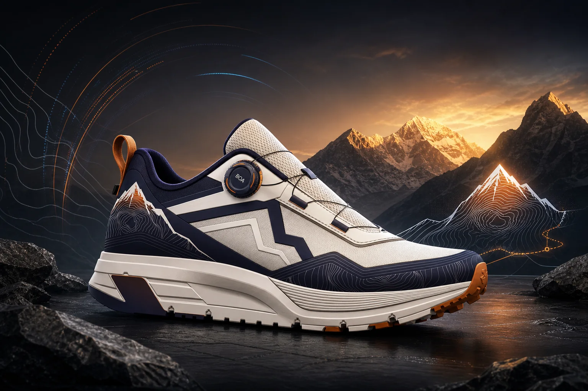
日照金山配色
以雪山日出为灵感，把地形线、BOA 精准锁定与厚底缓震集成到一双高辨识度越野跑鞋里。
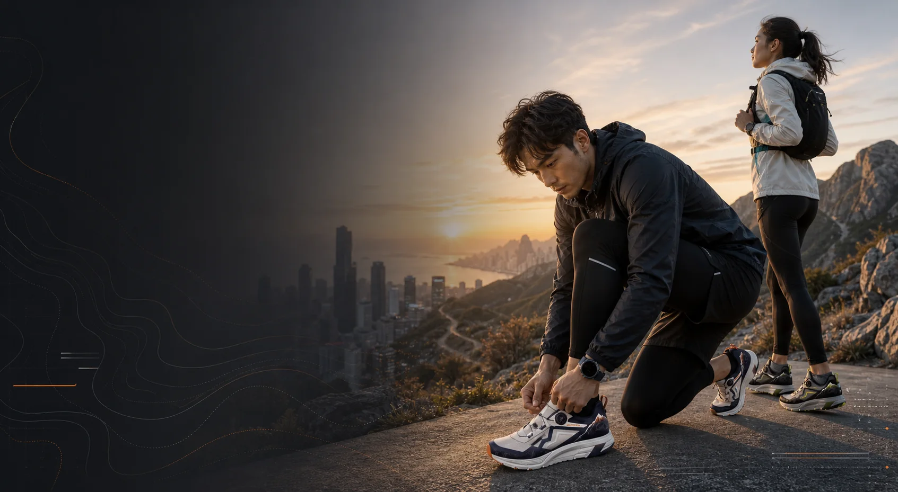
Market Signal
公开市场报告显示，越野跑鞋增长受户外活动、健康意识、轻量材料与抓地技术推动；轻量越野仍是主力，技术型越野鞋增长更快。这双鞋适合站在“城市训练”和“周末山野”之间的人。
Target Audience
25-38 岁，有路跑习惯，开始报名山地赛或周末轻越野，需要一双“从公园跑到山路”的装备。
关注科技材料、BOA、抓地纹路和配色故事，愿意为中高端功能鞋和强识别外观付费。
不一定天天跑山，但需要舒适厚底、稳定支撑和拍照好看的山野鞋，穿搭与功能同等重要。
Design DNA
鞋身侧墙使用深海军蓝建立稳定基底，铜橙色像日出打在山脊上，白色网面负责轻量和透气。后跟的雪山图案与等高线不是装饰，而是在视觉上把“目的地”直接放进产品。
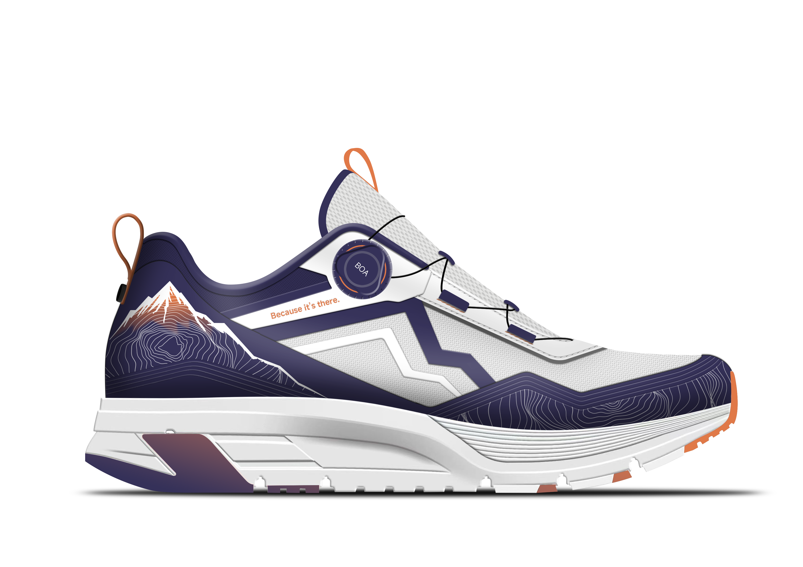
Color, Material, Finish
后跟图案与前掌等高线形成连续地貌，远看是速度块面，近看有探索细节。
铜橙色点缀集中在鞋提、鞋头与标语区域，强化“日照金山”的记忆点。
BOA 旋钮把户外感拉向科技装备，快速调节、稳定包裹，视觉中心也更明确。
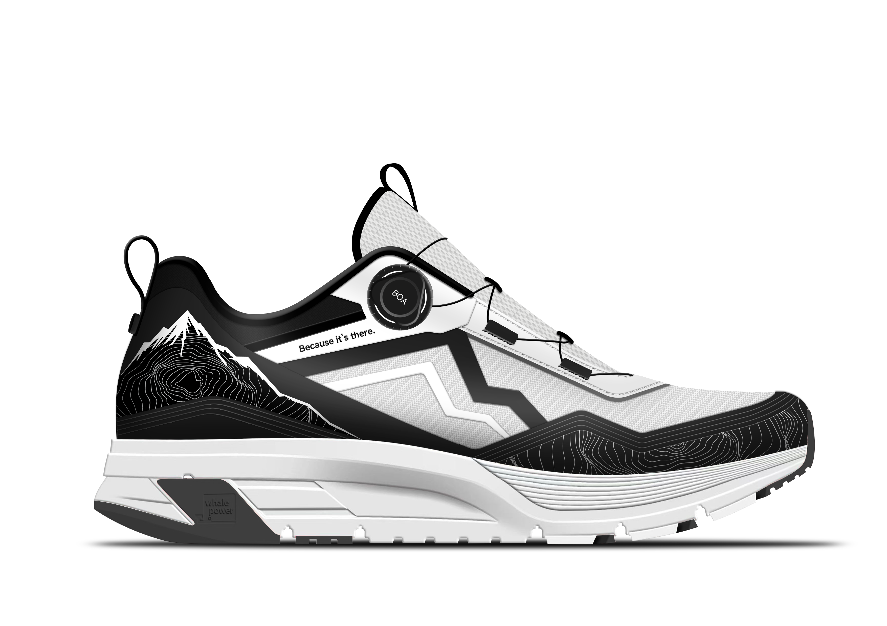
Precision Fit
侧向 BOA 旋钮与黑色线缆构成鞋面张力系统，比传统鞋带更快进入状态，也更适合户外环境里的短暂停顿和快速再出发。
Performance Layers
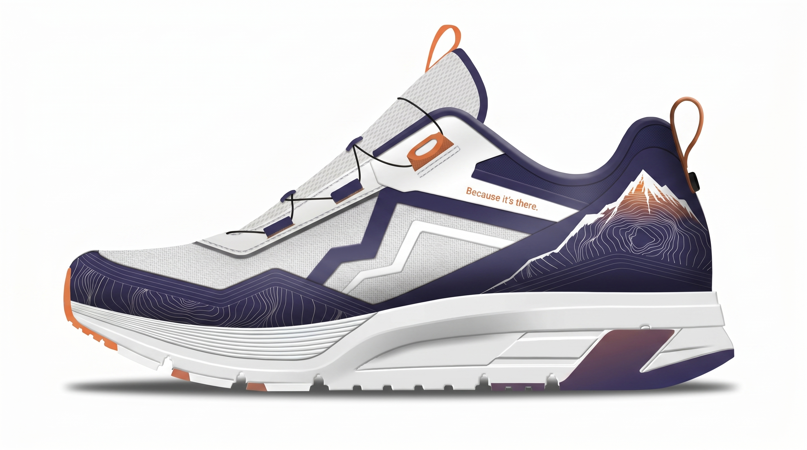
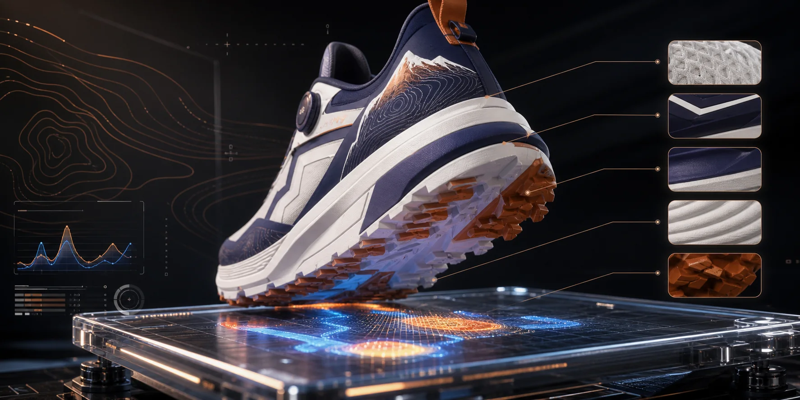
Performance Lab
厚底缓震、外底齿纹和中足支撑可以通过压力图、坡道测试和湿滑地面测试表达。汇报时这页负责把“好看”转成“可信”。
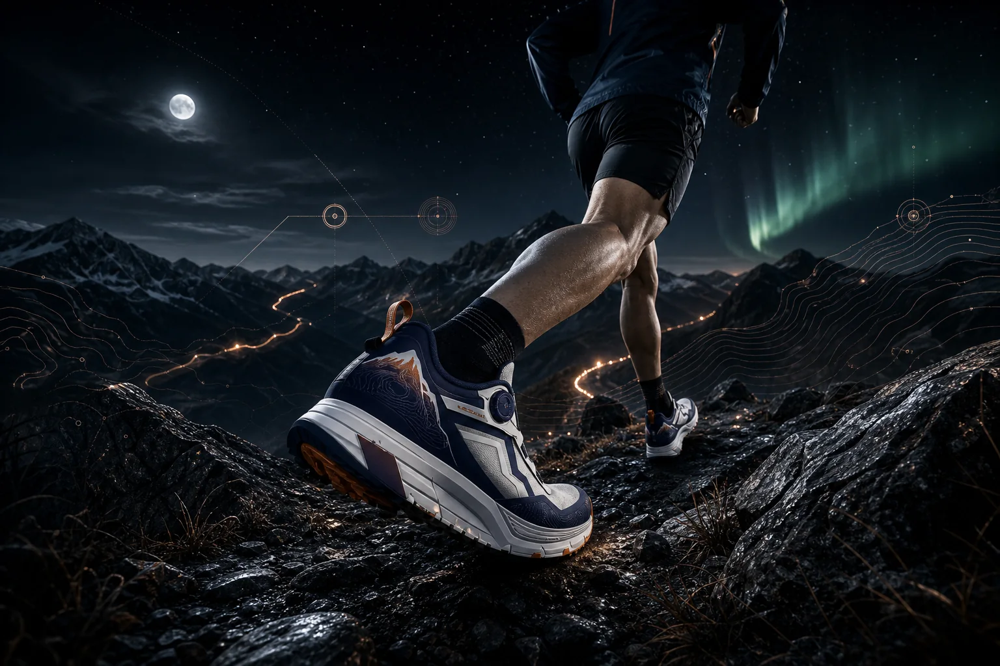
Interactive 3D Model
压缩包里的 FBX 模型与 basecolor / normal / metallic / roughness 贴图已经接入 Three.js。现场演示时，这页可以直接当“产品上台”的互动预览。
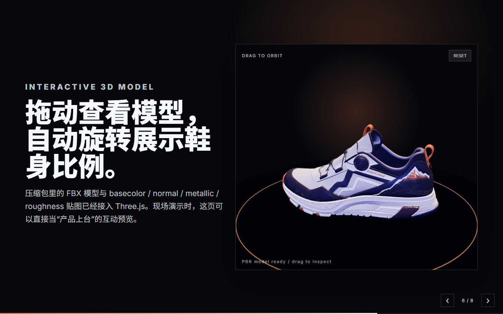
Colorway Family
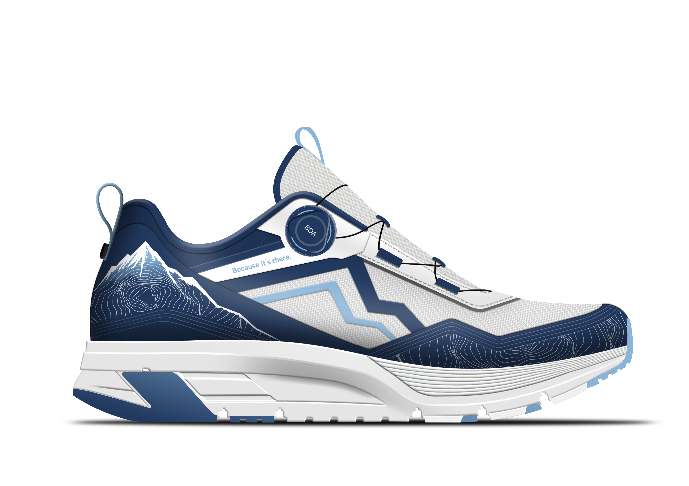
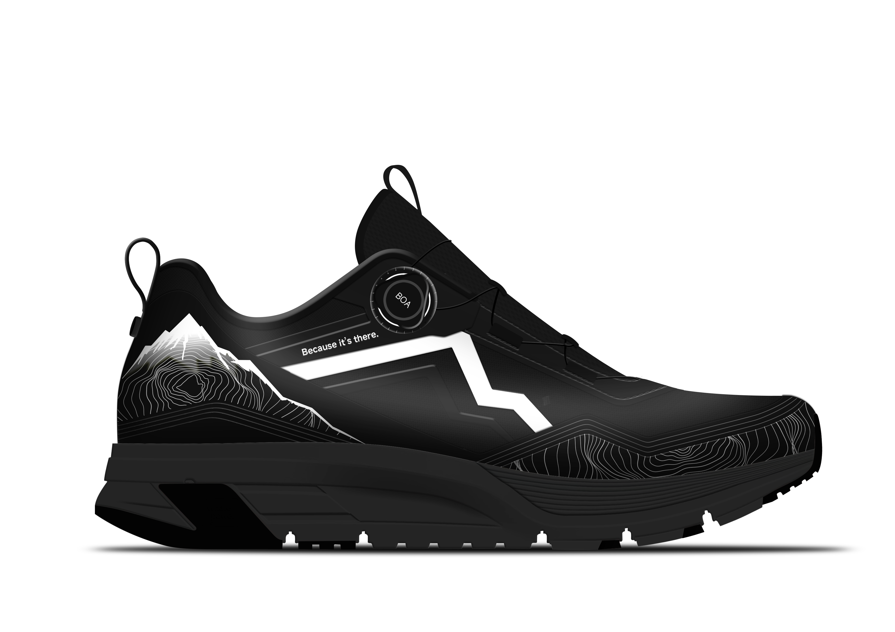
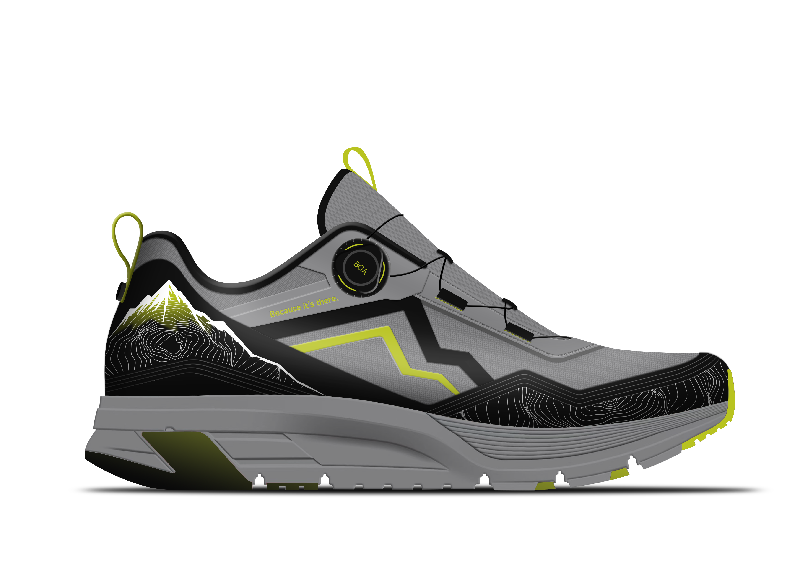
Product Views
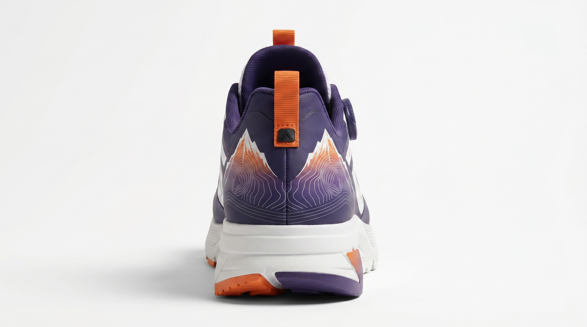
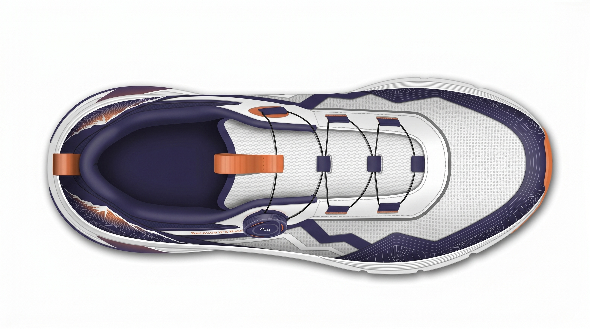
Go To Market
Key Takeaways
Because it's there.
这双鞋的核心表达不是“更复杂”，而是把山野符号、科技调节和可视化性能放在一个干净、强记忆点的产品故事里。